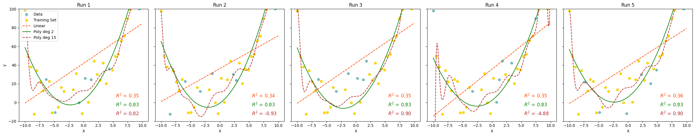

4. Bias, Variance, and Regularization#
The rule of thumb is that simpler models are preferable. However, a model that is too simple won’t do a good job approximating the trends in the data.
Underfitting refers to the selection of a model structure that is too simple to usefully describe trends in the data.
In contrast, overfitting refers to models that are too complex, models that mistake randomness in a sample of data as trends.
We want to hit a sweet spot, choosing an appropriate model that is neither under- or over-fit. But how?
4.1. The Bias-Variance Tradeoff#
The rule of thumb is that simpler models are preferable. This guiding principle is a summary (possibly an over-simplification) of the Bias-Variance tradeoff.
Bias and variance refer to two sources of error that arise in fitting machine learning models.
Bias error are errors in model fit. Typically, bias results from using a model that is too simple (or just plain wrong) to capture the relationships in the data, namely under-fitting.
Variance refers to errors that arise from models that capture the specific fluctuations or noise in the training data that don’t generalize to other data. Using such a model that is too complex and hence to specific to the training data, is called over-fitting.
4.2. Symptoms of Under- and Over-fitting#
Under-fitting
High bias (fitting or classification error) in both training and testing sets.
Model doesn’t “look like” data (this is really only apparent for simple models).
Over-fitting
Low bias in training data and significant drop off in testing. The model doesn’t generalize.
If the model is re-fit using different samples for training, the model parameters will change dramatically. This is the underlying principle of a model selection method called cross-validation.
4.3. Summary Table#
| High Bias | High Variance |
|---|---|
| Model too simple or wrong. | Model too complex. |
| Doesn't capture the trend. | Captures the trend and the noise. |
| Not enough parameters. | Too many parameters or not enough data. |
| Bad fit on train and test. | Good fit on train, bad fit on test. |
| Generally under-fit. | Generally over-fit. |
| Try a different model type, reduce regularization, add features to data | Simplify model, increase regularization, add more training data. |
4.3.1. Pictorial Example#
In the example below, a set of 100 data points were generated following a quadratic function (second-order polynomial) with added noise. We fit three different models to the data:
A linear model (too simple)
A second-order polynomial (just right)
A 15-order polynomial (too complex)
We repeat the fit 5 times, with different training subset (80%) each iteration.

Describe what you see. Which model has high bias? Which model has high variance?
4.4. Regularization#
When we explored Multiple Linear Regression, we tried to select features by inspecting correlations between a feature and the target as well as between features. But how did we know if we were using the right features and the right number of features? We didn’t.
Regularization is a tool for automatically emphasizing the features that are informative as you fit the model. Recall, in fitting linear regression models, we are minimizing the mean-squared error between our predictions and the true values. The cost function has the form:
Regularization adds a term to the cost function that penalizes large feature weights (\(w_i\)). Two common regularization algorithms are:
Lasso regression (Least Absolute Shrinkage and Selection Operator):
Elastic Net (combines Ridge and Lasso)
Where
\(\alpha\) is a hyper-parameter that balances how much you want to balance model simplification and model fit.
L2 norm is the sum of squared values of weights
L1 norm is the sum of the absolute values of weights
\(r\) is a hyper-parameter in the range (0,1) that balances the amount of L2 (Ridge) and L1 (Lasso) penalty
That Ridge uses the L2-norm and Lasso uses the L1-norm can be reduced to the following observation:
Ridge regression will make some weights small, but not zero. This is useful if you believe many of the features contribute to the model.
Lasso regression will drive some weights to zero. This is useful if you believe only a few weights contribute.
However, we generally don’t know in advance how our features will contribute to the model, so best to try both and compare.
4.5. Feature Scaling#
In many cases, the scale of our features affects the learning algorithm. The regularization methods above are sensitive to the relative sizes of the features. Why?
Consider a model that predicts the rent for an apartment based on square footage and number of bedrooms.
The scale of our target and features are:
\(y\) - 500-7500 USD
\(x_1\) - 500-2500 sq ft
\(x_2\) - 1-4 BR
What does this mean say about the size of our parameters \(\theta_0\), \(\theta_1\) and \(\theta_2\):
\(\theta_0\) - ?
\(\theta_1\) - probably in the range 0-2
\(\theta_2\) - probably in the range 100-2000
Without any scaling, we expect \(\theta_2 >> \theta_1\) (much bigger). So when we regularize, reducing \(\theta_2\) will have a much bigger impact than reducing \(\theta_1\). But we don’t think that number of bedrooms is 100-1000x more important than area!
The solution is feature scaling!
Feature scaling transforms the values of our features (\(x_i\)) so that each feature is spans roughly the same range of values, making no one feature incorrectly more important than the others. The two main variants of feature scaling:
Standardization - This is the most commonly used scaler. For each feature, calculate the mean and variance across all values in the training set. For each value, subtract the sample mean and divide by the square root of the variance. The resultant scaled feature has mean of 0 and variance of 1.
Normalization - for each feature, find the minimum and maximum values. From each value, subtract the minimum and divide by the range. The new scaled feature will be a value in the range [0,1].